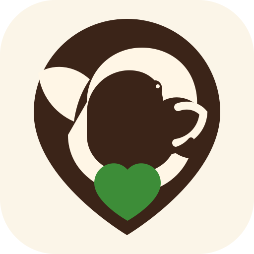

Whatsup dogSamen op pad.
🐾
Welkom terug
Wat gaan jullie doen?
Een fijne wandeling begint met weten wat er in de buurt speelt.
VANDAAG
Rond jullie
Even snuffelen…
We kijken wat er rond jullie speelt.
OFFICIËLE DATA
Losloop in de buurt
🐾 We halen de officiële hondenkaart op…
Bron: officiële hondenkaart gemeente Nijkerk.
WHATSUP DOG
Wie loopt er mee?
Praat met hondenmensen uit je buurt, deel tips of spreek samen af.
🐕
SEIZOENSTIPLet onderweg op grasaren
Meld irritante of gevaarlijke vegetatie direct op de kaart.
Whatsup dogSamen op pad. Een mooiere buurt.
◆
Officiële hondenlocatiesRechtstreeks uit de gemeentelijke GIS-laag
💬
Whatsup dog
Lokaal · Vriendelijk · Betrouwbaar
Chatdemo: berichten blijven op dit toestel.
🔔
Meldingen
Alleen wat voor jou en je hond telt.
Echte webpush wordt geactiveerd zodra de gedeelde backend klaarstaat.
🐶
Jouw hond
Maak je hondenprofiel af
Privacy als uitgangspunt
Andere gebruikers zien je openbare hondenprofiel, nooit automatisch je e-mailadres of live GPS-locatie.
Mijn meldingen0
Bedankjes0
ProfielstatusLokaal